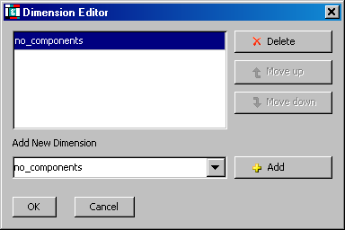

To declare quantities for a Connection Type simply double click on the cells labeled <new> and enter the name of the quantity. You can then enter information pertaining to Parameters, Distribution Domains and Variables - these are identical to those that are declared in Models.
For Parameter declarations, a Type - Integer, Real or ForeignObject - must be provided.
If ForeignObject is selected then a class can also be provided.
For Integer and Real Parameters it is also possible to provide a default value.
For Distribution Domain declarations, lower and upper bounds must be provided.
For Variable declarations, a Variable Type must be provided; this should be selected from a drop-down list of all Variable Types declared in this Project (or cross-referenced Projects). The Connection Type can include scalar and Array Variables:
To define the dimensionality of the Array click on the <scalar> cell to access the Dimension Editor.
In the Add New Dimension box either select an Integer Parameter that has been declared in this Connection Type or type in a literal value (e.g. 7).
It is possible to declare multiple dimensioned Variables by Adding more than one Dimension - multiple dimensions can be ordered using the Move Up and Move Down buttons
